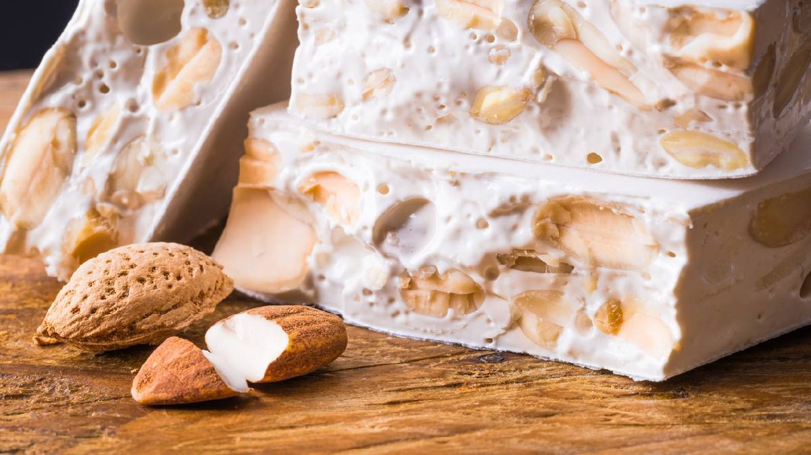

Nougat

Description
Nougat is a sweet confection made from a mixture of sugar, honey, and
nuts, traditionally almonds.
It has a chewy texture and is used in various confections, from candy
bars to chocolates.
Ingredients
- 1 cup (American) of water
- 1 and ½ cups (American) of honey
- 3 cups (American) of roasted, skinless peanuts
- 5 (American) cups of sugar
- 3 egg whites
Steps
-
Add the water, sugar and honey, bring to the boil and make a syrup
until it reaches the candy stage.
-
Beat the egg whites until stiff, gradually adding the hot syrup, with
the mixer on, beating constantly.
-
Mix in the peanuts and continue beating until they start to sugar.
-
Pour onto a buttered surface, smooth with a spatula and quickly cut
into squares.
- Once dry, wrap in waterproof paper or cellophane.